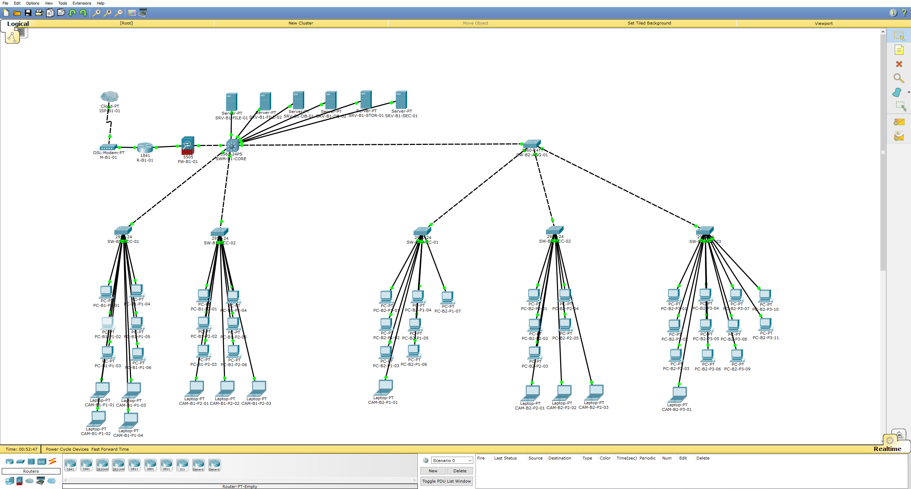
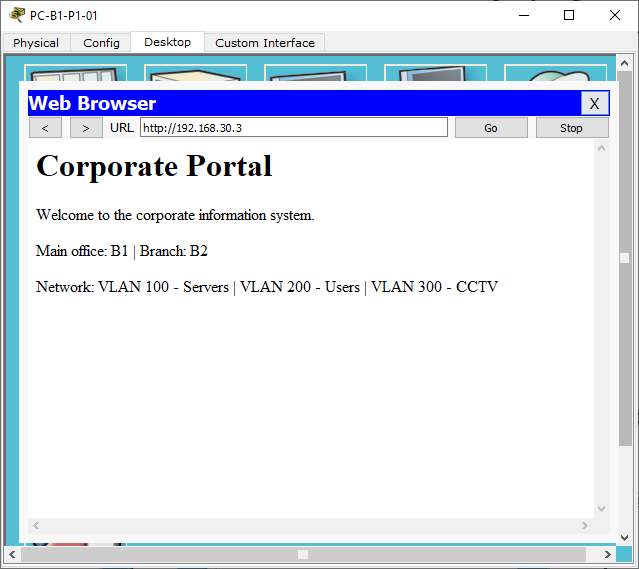
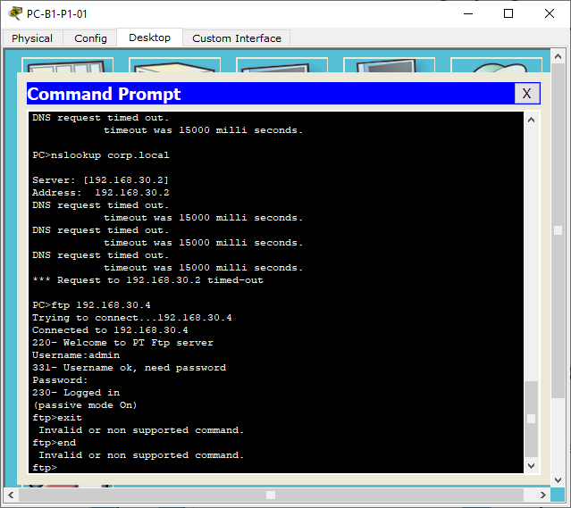
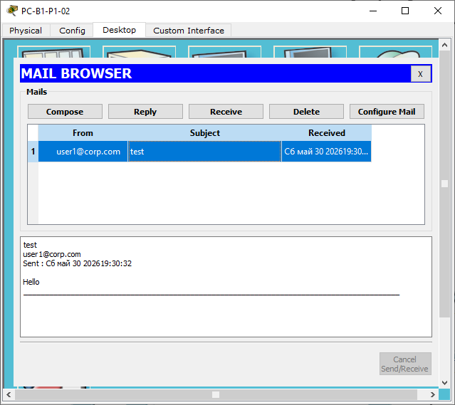
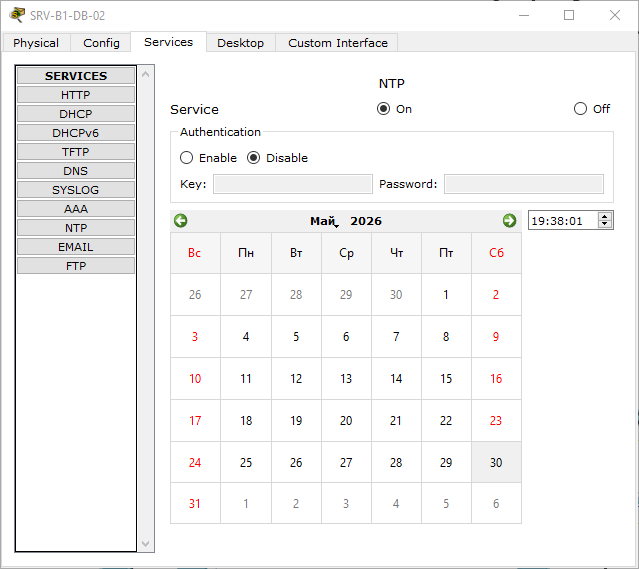
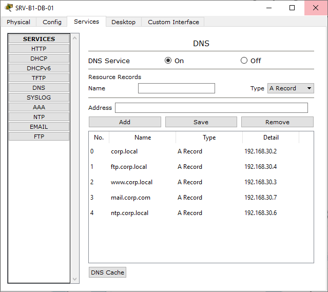

2 ЭКСПЛУАТАЦИОННАЯ ЧАСТЬ
2.1 Таблица VLAN
Таблица 6 — Список VLAN проекта
| VLAN ID | Название | Назначение | Подсеть |
|---|---|---|---|
| 100 | SERVERS | Серверы головного офиса B1 | 192.168.30.0/28 |
| 200 | USERS | Рабочие места пользователей (B1: 12 ПК, B2: 23 ПК) | 192.168.40.0/26 |
| 300 | CCTV | IP-камеры видеонаблюдения PoE (B1: 7, B2: 5) | 192.168.60.0/28 |
| 400 | DMZ | Демилитаризованная зона (ASA inside) | 192.168.10.0/28 |
| 999 | MGMT | Управление сетевым оборудованием | 192.168.99.0/29 |
2.2 IP-адресация
Таблица 7 — IP-адресация по VLAN
| VLAN | Название | Подсеть | Маска | Шлюз (SVI) | Диапазон хостов | Макс. хостов |
|---|---|---|---|---|---|---|
| 100 | SERVERS | 192.168.30.0 | /28 (255.255.255.240) | 192.168.30.1 | .2 — .14 | 13 |
| 200 | USERS | 192.168.40.0 | /26 (255.255.255.192) | 192.168.40.1 | .2 — .62 | 61 |
| 300 | CCTV | 192.168.60.0 | /28 (255.255.255.240) | 192.168.60.1 | .2 — .14 | 13 |
| 400 | DMZ | 192.168.10.0 | /28 (255.255.255.240) | 192.168.10.1 | .2 — .14 | 13 |
| 999 | MGMT | 192.168.99.0 | /29 (255.255.255.248) | 192.168.99.1 | .2 — .6 | 6 |
Таблица 8 — Статические IP-адреса серверов
| Устройство | Маркировка | IP-адрес | Сервис |
|---|---|---|---|
| DNS-сервер | SRV-B1-DB-01 | 192.168.30.2 | DNS (corp.local, corp.com) |
| HTTP-сервер | SRV-B1-FILE-01 | 192.168.30.3 | HTTP — Corporate Portal |
| FTP-сервер | SRV-B1-FILE-02 | 192.168.30.4 | FTP (пользователь: admin) |
| NTP-сервер | SRV-B1-DB-02 | 192.168.30.5 | NTP (синхронизация времени) |
| СХД 500 ТБ | SRV-B1-STOR | 192.168.30.6 | Хранилище данных |
| Email-сервер | SRV-B1-SEC | 192.168.30.7 | SMTP/POP3 (домен: corp.com) |
| ASA inside | FW-B1-01 Vlan1 | 192.168.10.2 | Межсетевой экран (inside) |
| ASA outside | FW-B1-01 Vlan2 | 10.0.0.2 | Межсетевой экран (outside) |
| Роутер провайдера | R-B1-01 Fa0/1 | 10.0.0.1 | Имитация провайдера |
2.3 Назначение портов коммутатора ядра
Таблица 9 — Назначение портов SW-B1-CORE (3560-24PS)
| Порт | Подключение | Режим | VLAN |
|---|---|---|---|
| Fa0/1 | FW-B1-01 (ASA inside) | Access | 400 |
| Fa0/2 | SW-B1-ACC-01 (часть 1) | Trunk | 200, 300, 999 |
| Fa0/3 | SW-B1-ACC-02 (часть 2) | Trunk | 200, 300, 999 |
| Fa0/4 | SW-B2-AGG-01 (межздание) | Trunk | 200, 300, 999 |
| Fa0/5–10 | Серверы SRV-B1-* | Access | 100 |
| Vlan100 SVI | 192.168.30.1/28 | — | SERVERS |
| Vlan200 SVI | 192.168.40.1/26 | — | USERS |
| Vlan300 SVI | 192.168.60.1/28 | — | CCTV |
| Vlan400 SVI | 192.168.10.1/28 | — | DMZ |
| Vlan999 SVI | 192.168.99.1/29 | — | MGMT |
2.4 Конфигурация оборудования
Конфигурация SW-B1-CORE (3560-24PS) — VLAN, SVI, маршрутизация, DHCP:
Конфигурация FW-B1-01 (Cisco ASA 5505) — интерфейсы и маршрутизация:
Конфигурация коммутаторов доступа (пример SW-B1-ACC-01):

Рисунок 9 — Общая схема сети в Cisco Packet Tracer 6.2
2.5 Настроенные сетевые сервисы
В головном офисе B1 настроены следующие сетевые сервисы:
Таблица 10 — Сетевые сервисы проекта
| Сервис | Сервер | IP-адрес | Статус | Описание |
|---|---|---|---|---|
| DHCP | SW-B1-CORE | 192.168.40.1 / 192.168.60.1 | ✓ Работает | Авто-выдача IP для VLAN 200 и 300 |
| DNS | SRV-B1-DB-01 | 192.168.30.2 | ✓ Работает | Зоны corp.local и corp.com |
| HTTP | SRV-B1-FILE-01 | 192.168.30.3 | ✓ Работает | Corporate Portal (index.html) |
| FTP | SRV-B1-FILE-02 | 192.168.30.4 | ✓ Работает | Пользователь admin, права RWDNL |
| NTP | SRV-B1-DB-02 | 192.168.30.5 | ✓ Работает | Stratum 2, синхронизирован с SW-B1-CORE |
| SRV-B1-SEC | 192.168.30.7 | ✓ Работает | SMTP/POP3, домен corp.com, user1/user2 |

Рисунок 10 — Корпоративный веб-портал (HTTP, 192.168.30.3)

Рисунок 11 — Подключение к FTP-серверу (192.168.30.4)

Рисунок 12 — Отправка и получение Email (corp.com)

Рисунок 13 — Настройка NTP-сервера (192.168.30.5)

Рисунок 14 — DNS-сервис, записи зоны corp.local / corp.com